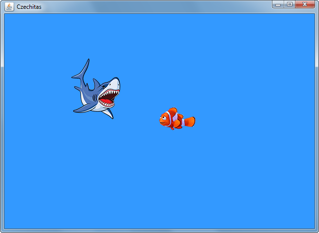
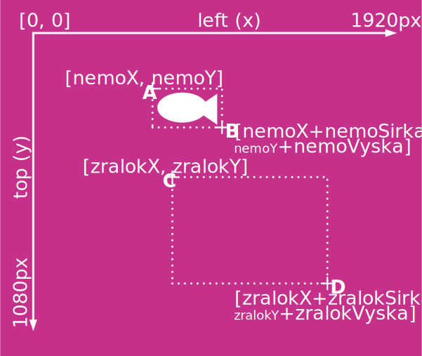
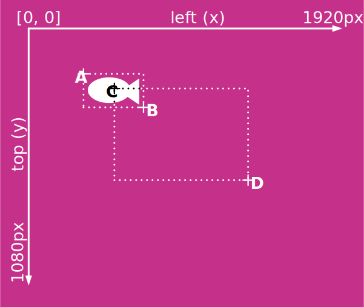
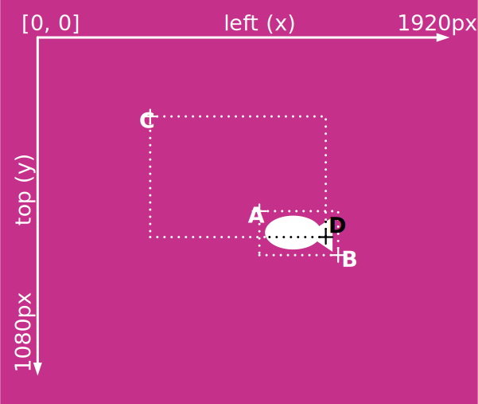

Domácí úkol - Nemo 2
V hodině jsme programovali Hledá se Nemo. Pohyb rybičkou v okně. Ovšem herně orientovaný, s použitím JKeyboard.
Úkolem je rozšířit tuto aplikaci o žraloka, který se bude samočinně hýbat.
Způsob pohybu může být podobný jako v přiloženém demu
nebo třeba podobně jako kulička ve hře hrou Ping Pong,
kterou jsme také probírali v hodině.
(Ano, toto je v podstatě podobné zadání jako úkol 6, jen tentokrát je to rozšíření aplikace z hodiny).
Nyní ale něco nového: Úkolem je zapracovat do aplikace test, zda se žralok nedotkl Nema. Anglicky se to nazývá collision detection. Pokud se tedy žralok dotkne Nema, rybička virtuálně umře. V demu prostě zmizí a objeví se na výchozím místě (např. v prostředku obrazovky). Jako bonus můžete například informovat uživatele, že přišel o 1 život.
Demo stahujte a zkoušejte odtud: Nemo2-Demo-heslo_czechitas.7z
Detekování kolize dvou JLabelů není nic složitého. Pozor ale, abyste se v tom nezamotaly. Nejde o matematiku, procvičíte si tím analytické myšlení. Zamyslete se, jak je nutné sestavit podmínky pro tyto tři diagramy:
  Tip: Doporučuji nadefinovat lokální proměnné pro každý bod na obrázku a naplnit do nich správné hodnoty. Pak už bude sestavení podmínky celkem snadné.
private void priTiknutiCasovace(ActionEvent e) {
Integer nemoX;
Integer nemoY;
Integer nemoSirka;
Integer nemoVyska;
Integer zralokX;
Integer zralokY;
Integer zralokSirka;
Integer zralokVyska;
// Naplnte do promennych spravne hodnoty
// ... Vas kod pro pohyb Nema a zraloka ...
Integer bodAX;
Integer bodAY;
Integer bodBX;
Integer bodBY;
Integer bodCX;
Integer bodCY;
Integer bodDX;
Integer bodDY;
// Naplnte do promennych spravne hodnoty
// A nyni uz jen spravne sestavit podminku,
// ktera plati prave tehdy kdyz
// se JLabely prekryvaly
if (necoX < necoX && necoY < necoY
&& necoX > necoX && necoY > necoY) {
// Nastala kolize
}
}
}
Pokud budete mít s úkolem jakýkoliv problém, využjte naši facebookovou skupinu, kde vám rádi poradíme.
Hotový úkol zabalte 7-Zipem s heslem czechitas včetně šifrování jmen souborů a zašlete ho Kamčovi (mně) a Hance emailem.